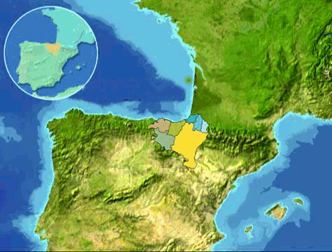
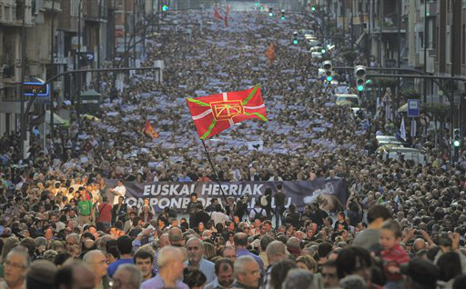
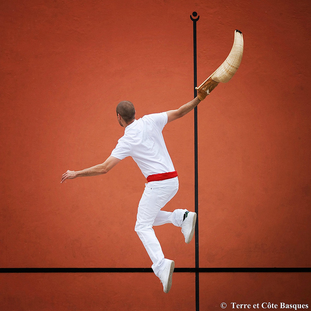
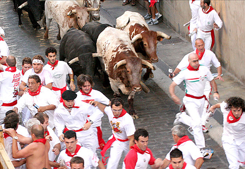
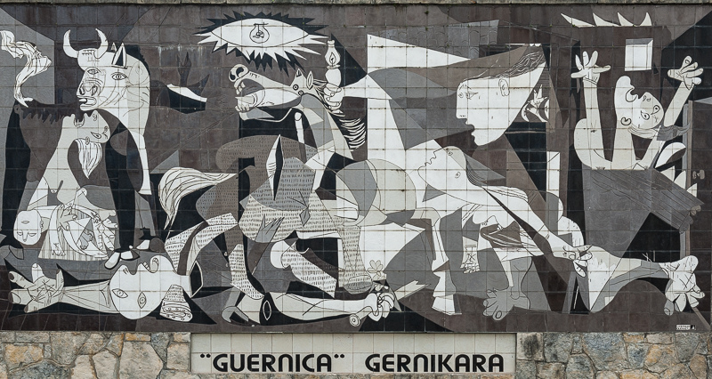

The Basque Country
Description and Location
The Basque country is a name given to a community of people from the western pyreness that spans the border between Fance and Spain.
It consists of seven regions, the Autonomous Communities and Navarre in Spain and the Northern Basque country in France.
The language Basque is considered the oldest language in Europe, and its origin is unknown.

Basque Economy
The Basque Autonomous Community ranks first in Spain in terms of per capita income, with GDP per capita being 40% higher than that of the European Union.
Industrial activities were traditionally centered on steel and shipbuilding. However, with the reformation of its economy during the economic crisis of 1970s and 1980s,
these activities are giving ground for the development of the service sector and new technologies of industrial machineary.
Basque Nationalism
Basque nationalism is a political movement advocating for either further political autonomy or, chiefly, full independence of the Basque Country in the wider sense.
As a whole, support for Basque nationalism is stronger in the Spanish Basque Autonomous Community and north-west Navarre, whereas in the French Basque Country support
is not as strong, but still heavily prevalent.

Jai Alai
Jai Alai is a traditional sports originated from the Basque country.
It is a variety of Basque pelota.The Basque Government promotes Jai Alai as the "fastest sport in the world".The jai alai ball once held the world record for ball
speed with a 125-140g ball covered with goatskin that traveled at 302 km/h (188 mph).

Pamplona Bull Run
The running of the bulls is a practice that involves running in front of a small group of bulls that have been let loose on a course of a sectioned-off subset of a town's streets.
The most famous running of the bulls is that of the seven-day festival of Sanfermines in honour of Saint Fermin in Pamplona.
Spanish tradition says the true origin of the run began in northeastern Spain during the early 14th century. While transporting cattle in order to sell them
at the market, men would try to speed the process by hurrying their cattle using tactics of fear and excitement.

Gernika Bombing
The bombing of Guernica was an aerial attach on the Basque town of Guernica, Spain, causing widespread destruction and civilian deaths during the Spanish Civil War.
The raid by planes of the German Luftwaffe "Condor Legion" and the Italian Fascist Aviazione Legionaria was called Operation RŸgen.
The bombing is considered one of the first raids in the history of modern military aviation on a defenseless civilian population. The picture is a mural from Picasso's painting "Guernica".

Tree of Gernika
Gernika Arbola(the tree of Gernika in basque) is an oak tree that symbolizes traditional freedoms for the Biscayan people, and by extension for the Basque people as a whole.
The lords of Biscay(including kings fo Castile and Carlist pretenders to the throne) swore to respect the Biscayan liberties under it,
and the modern Lehendakari of the Basque Country swears his charge there.
Responsive Slider